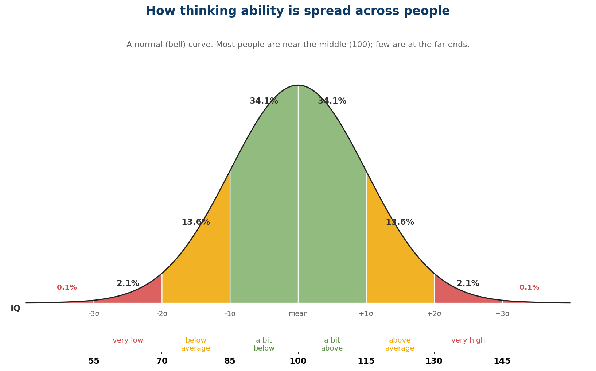

Выборы вообще не работают;
во всём нужно винить математику
Экскурсия по избирательным системам, каждая из которых по-своему врёт вам в лицо — и ни одна не виновата, потому что виновата сама математика голосования.
Разбор по мотивам Adam Rogers · с дополнениями и без пощады
Почему мир устроен именно так
Почему мир устроен именно так, а не иначе
Мир предназначен для жизни не умных, а большинства. И как только ты это осознаешь, половина «нелогичных» вещей вокруг встаёт на свои места.

Персональные финансы – больше, чем просто учет доходов/расходов
О чем
Этой темой я хочу открыть серию статей о личных финансах, в которых я постараюсь вкратце изложить суть персональных финансов и личного финансового планирования, исходя из своего практического опыта, а также знаний, которые были почерпнуты (и отфильтрованы) из книг и семинаров. Хочу поделиться этим, потому что «деньги любят счет», а мы об этом часто забываем, что, в последствии, вылезет нам боком. Персональные финансы — это не только учет доходов и расходов в Excel или на смартфоне, это достижение жизненных целей более кратким и, возможно, единственно правильным путем. Эта тема не о том, как и куда инвестировать! Я наоборот вас отговорю делать многие глупые вещи, потому что сам конкретно влип в свое время. Эта тема о том, как сохранить и приумножить безопасно. Самое интересное — все довольно легко, не требует ущемления себя в чем-то — вы живете так же, как и жили. Но при этом достигаете большего.
Думай проще
Высокие технологии - это круто, но иногда "низкие" бывают на порядок полезнее и экономичнее, главное - мозгами шевелить в нужном направлении. Сейчас вы узнаете историю фабрики по производству зубной пасты, где возникла проблема обнаружения пустых тюбиков на выходе конвейера.
Осознавая всю важность вопроса, директор фабрики созвал начальников отделов. Собрание постановило запустить новый проект - привлечь для решения проблемы пустых тюбиков стороннюю инжиниринговую компанию, так как собственный конструкторский отдел был слишком загружен, чтобы взять на себя дополнительную задачу.
Правила
- Если тебе не хватает денег – ищи дополнительную работу.
- Деньги заработать просто – сложнее их сохранить и приумножить.
- Часто люди зарабатывают мало только потому, что не ценят свою работу.
- Миллионером может стать каждый.
- Заботься сначала о приобретении активов, а затем
Матрица принятия решений
Приходилось ли вам оказываться в положении буриданова осла, когда и этот вариант хорош, и другой, и третий, и невозможно выбрать что-то одно? Если да, то эта рассылка будет вам полезна. Матрица принятия решения позволяет сделать выбор оптимального варианта среди множества равно привлекательных возможностей. Матрица проста в использовании, но при этом дает математически обоснованное решение.
Матрицу изобрел Стюарт Пью (Stuart Pugh), ее также называют методом Пью. В России она более известна как бально-весовая методика или метод оценки альтернатив. Чаще всего эта матрица используется для выбора технического решения или продукта. Она незаменима при выборе поставщика и отборе кандидата на вакантную должность. Но ее также можно использовать и для решения бытовых вопросов: где и что купить, куда поехать отдыхать. Сфера применения данной матрицы очень широка.
Давайте посмотрим на образец матрицы и разберем методику ее создания на следующем примере. Представьте, что вам надо взять одного человека на должность менеджера по продаже конфет в продовольственные магазины.
Примечание: Матрицу принятия решения удобнее всего составлять в программе Excel или аналогичной программе.
Первый шаг.
Составьте список возможных альтернатив, в данном случае кандидатов на должность.

Второй шаг.
Составьте список критериев, на основании которых вы будете отбирать наилучший вариант. Также определите вес каждого критерия. Вес критерия имеет ключевое значение для получения наилучшего результата. Начните с определения того, какой из критериев является самым важным и придайте ему максимальный вес. Затем решите, какой из критериев наименее важен и придайте ему минимальный вес, можно даже меньше единицы. Распределите вес остальных критериев между этими двумя цифрами.
Например, для продавца главное в работе – умение располагать к себе клиента, то есть коммуникативные навыки. Им мы придаем наибольший вес – 3. Внешний вид – вещь субъективная и поправимая, поэтому для нас это критерий с наименьшим весом 1. Опыт работы и мотивация важнее знания рынка, потому что мы можем легко поделиться знаниями рынка с новым сотрудником, но опыт нарабатывается только со временем, а желание работать в данной должности во многом зависит от базовых установок и характера человека.

Третий шаг.
Заполните таблицу, оценивая каждую из альтернатив по пятибалльной системе. Например, внешний вид Иванова мы оценили на 3, Петрова – на 5 и Сидорова – на 4. И так далее.
Четвертый шаг.
В графу «Итог» вбейте формулу для подсчета: суммируйте набранные каждой альтернативой оценки, умножая каждую оценку на вес критерия. Например, для Иванова формула подсчета выглядит следующим образом: 3х1+4х3+5х1,5+5х2+4х2=40,5

Пятый шаг.
Проанализируйте итоговые цифры, сравните их с вашими субъективными впечатлениями. Например, в нашем случае Иванов произвел наихудшее первое впечатление, его внешний вид был хуже, чем у остальных кандидатов. Но он прекрасно знает рынок, обладает большим опытом работы и хорошими коммуникативными навыками. Если бы мы не использовали матрицу принятия решения, мы, скорее всего, отвергли бы Иванова на основании своих первых субъективных ощущений и допустили бы большую ошибку, так как объективно он – самый сильный из трех кандидатов.
Основные преимущества данного способа принятия решения:
Мы минимизируем влияние субъективных факторов на наше решение, оно становится более объективным.
Математическая обоснованность нашего решения и наглядность этого обоснования помогают убедить других в правильности принятого нами решения.
Мы также точно знаем, что является вторым наилучшим вариантом и может прибегнуть к нему в случае сбоя с наилучшей альтернативой.
Давайте потренируемся:
Вы уже придумали, что будете делать в ближайшие выходные? Давайте применим научный анализ и выберем наилучший вариант вашего времяпрепровождения. Составьте список возможных мероприятий на выходные и список критериев их оценки. Внесите их в матрицу принятия решения и последовательно выполняйте все шаги работы с матрицей. Возможно, вы найдете наилучший способ провести выходные!
Аль Пачино
"В детстве я молил бога о велосипеде, потом понял, что бог работает по-другому. Я украл велосипед и стал молить бога о прощении."
Аль Пачино.
Мотивация по-русски
Я сегодня услышал историю про мотивацию по–русски. Я горд.
Суть: в головном офисе крупной и известной американской компании решили провести аттракцион невиданной толерантности. Постановили устроить гей — фестиваль из представителей всех офисов.
В русский офис пришла разнарядка — прислать 3 геев. Менеджмент крепко задумался.
Созвали собрание, начали думать. Придумали.
Вышло постановление: руководители подразделений, которые достигнут самых низких результатов за квартал едут на гей–парад.
Такого производства, продаж, маркетинга, рекламы, снабжения компания не видела никогда — производительность повысилась на 100% и выше.
И менеджмент добился своих результатов — и профит получили, и пид...расов выбрали.
А вы говорите — премии, обучения, карьерный рост, видение, миссия компании...
Freigeld (интересная статья о других видах денег)
Сергей Голубицкий, опубликовано в журнале "Бизнес-журнал" №18 от 02 Октября 2007 года.
«Я убежден, что будущее научится больше у Гезелля, чем у Маркса». Джон Мейнард Кейнс
Биографию американского доллара мы завершили в прошлом номере на печальной ноте: заигрывания с частными центробанками и ничем не обеспеченными кредитными деньгами рано или поздно обернутся катастрофой, которая, с учетом статуса USD как всемирной резервной валюты, проявится повсеместно — в разверзшиеся хляби ухнет вся мировая экономика.
Интересное наблюдение и вывод
Когда взрослый человек перестает бороться с грибком на ногах и вместо этого перенаправляет все свои силы и государственные ресурсы на борьбу с пропагандой грибка на ногах, такой человек представляет опасность не для грибка на ногах, а для себя и окружающих.
Исскуство дипломатии
Однажды у Генри Киссинджера спросили:
— Что такое челночная дипломатия?
Киссинджер ответил:
— О! Это универсальный метод! Поясню на примере: Вы хотите методом челночной дипломатии выдать дочь Рокфеллера замуж за простого парня из русской деревни. Как это сделать?
Про воспитание
Ехала с универа на трамвае. Сзади сидела какая-то мамаша с 9-11 летним ребенком на руках. И вот этот "малыш" постоянно меня тыкал ногой в грязных ботинках по белым брюкам (специально, понравилась я ему, наверное), на что я обратилась к его мамаше с просьбой его унять. Она мне сказала, что ОНИ воспитывают ребенка по системе какого-то "Эйху..зера",
Про книги и чтение
- Читая авторов, которые хорошо пишут, привыкаешь хорошо говорить.
- Культура — это не количество прочитанных книг, а количество понятых.
- Люди, которые читают книги, всегда будут управлять теми, кто смотрит телевизор.
Ответственность за убеждения
В одном американском городке бизнесмен решил открыть бар. Беда в том, что он находился на одной улице с церковью. Естественно, церковное руководство это не устраивало, и на каждой проповеди оно призывало горожан выступать против, и молиться, чтобы бог покарал нерадивого бизнесмена.
За день до объявленного открытия бара была сильная гроза, молния ударила в бар и он сгорел дотла. Церковники обрадовались, но ненадолго – хозяин бара подал на них в суд с требованием компенсации ущерба. Те, естественно, все отрицали.
Выслушав обе стороны, судья заметил: “Я пока еще не знаю, какой вердикт вынести, но из материалов дела следует, что владелец бара верит в силу молитвы, а все церковное руководство – почему-то нет… “
Как обезьяны демонстрируют основные понятия о человеке
Клетка. В ней 5 обезьян. К потолку подвязана связка бананов. Под ними лестница. Проголодавшись, одна из обезьян подошла к лестнице с явными намерениями достать банан. Как только она дотронулась до лестницы, вы открываете кран и со шланга поливаете ВСЕХ обезьян очень холодной водой. Проходит немного времени, и другая обезьяна пытается полакомится бананом. Те же действия с вашей стороны.
ОТКЛЮЧИТЕ ВОДУ.
О предметности советов на форумах
Помни о родителях
Жил когда-то в Нью-Джерси один старый итальянец. Он хотел посадить помидоры в своём саду, но это была очень тяжёлая работа, так как земля была тверда. Его единственный сын — Винсент, который всегда ему помогал, сидел в тюрьме.
Старик написал ему письмо:
Маркетинг косметики
<=Max=>:
Я помню нам по маркетингу в универе (94-й год! ) читали про 3 основных мировых принципа рекламы косметики.
- Взять любого актера (или бомжа, или бабку), нарядить в халат и назвать "Экспертом По Косметике" Института косметологии РАН или врачом-косметологом Центра Выпадения волос при Правительстве или любого другого (можно реально не существующий, но громко звучащий НИИ). Это "эксперто" должно рассказать про их "всесторонние" положительные исследования препарата.
- Должен быть нарисован эффект от +55 до + 237% улучшения за срок от 2-3 недель (срок должен быть таким, чтобы покупатель успел купить пару-тройку флаконов продукта, но при этом не очень большим, чтобы народ повелся)
- Обязательно должен присутствовать суперчудодейственный компонент (даже если его не существует в природе) - керамид R, бифидобактерия эссенсис, суперминерал Pro-Z и т. п. :))
И все. Пипл схавает. ДО сих пор убеждаюсь, что ничего не изменилось.
Добро и зло
Зло - это когда приходят враги, поджигают наши дома, угоняют наших лошадей и насилуют наших женщин.
Добро - это когда мы приходим к врагам, поджигаем их дома, угоняем их лошадей и насилуем их женщин.
Так ответил старый джигит на вопрос про зло и добро.
Тест при приеме на работу системных администраторов
legion
Взяли на работу... посадили кандидатов за компы, дали странное задание отрубить друг-другу инет, кто последний с инетом, тот работает.
видели бы вы ебальники кандидатов когда я их провода из свича выдёргивал
bash.org.ru
Альтернативный (нецензурный) гороскоп
Овен
Баран - он баран и есть. Всегда прав и
Американская поговорка
АМЕРИКАНЦЫ ГОВОРЯТ:
«ТОМУ, КТО ИЗОБРЕЛ, — ДОЛЛАР, ТОМУ, КТО ИЗГОТОВИЛ, — ДЕСЯТЬ, ТОМУ, КТО ПРОДАЛ, — СТО».
В ЭТОЙ ПОГОВОРКЕ — ВСЯ СЕРМЯЖНАЯ ИСТИНА БИЗНЕСА — ВЕЧНОГО И УНИВЕРСАЛЬНОГО
Советский лозунг

Семь элементов прочного, очень прочного сообщества
В блоге, посвященном приёмам работы с сообществами в Интернете, Ричард Миллингтон предложил свод правил по созданию прочного сообщества.
Все вместе эти семь элементов выглядят довольно радикально, каждый из них действителен не только для Интернета, но и для реальной жизни, и в каждом из них есть и польза и применимость.
Р. Хайнлайн - Интермедия. Из дневников Лазаруса Лонга
Всегда храни пиво в темном месте.
В настоящее время лишь один зверь во всей галактике опасен для человека - он сам. И поэтому он должен позаботиться о том, чтобы обеспечить самому себе достойную конкуренцию.
Мужчины куда сентиментальнее женщин. Их мышление страдает от этого.
Афоризмы из Р.Хайнлайна
О НАПИСАНИИ ИСТОРИЧЕСКИХ ТРУДОВ
История имеет такое же отношение к истине, что и теология к вере, а именно - никакого.
Л.Л.
Всегда говори ей, что она прекрасна, особенно если это не так.
Заметки о женской логике
Заметки о женской логике
Издание 3, исправленное и дополненное. Публикуется с разрешения автора
Предисловие
В наш век точное познание завоевывает все новые области. Одна из таких областей - женская логика. Стpогое изложение находится еще в стадии заpождения. Обычная мyжская логика пpошла этy стадию более двyх тысяч лет назад, но женская логика еще ждет своего Аpистотеля. Потомкам пpинадлежит большая и почетная задача создать систематический кypс женской логики, выполнить ее аксиоматизацию, создать вычислительные машины, действyющие по женски логическим схемам. Нам же пока пpидется огpаничиться настоящими заметками. Их задача - по меpе возможности восполнить недосмотp пpиpоды, лишившей мyжчин вpожденной способности пользоваться женской логикой, столь необходимой во многих жизненных ситyациях. Можно пpедвидеть yпpек в том, что наше изложение само основывается на женской логике. Этот yпpек следyет пpизнать совеpшенно неyместным: тpебование излагать аpистотелевскyю логикy пpи помощи женской звyчало бы не лyчше.